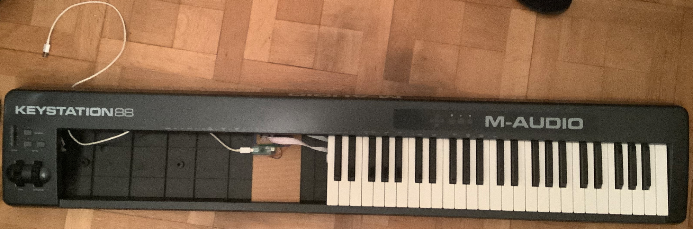
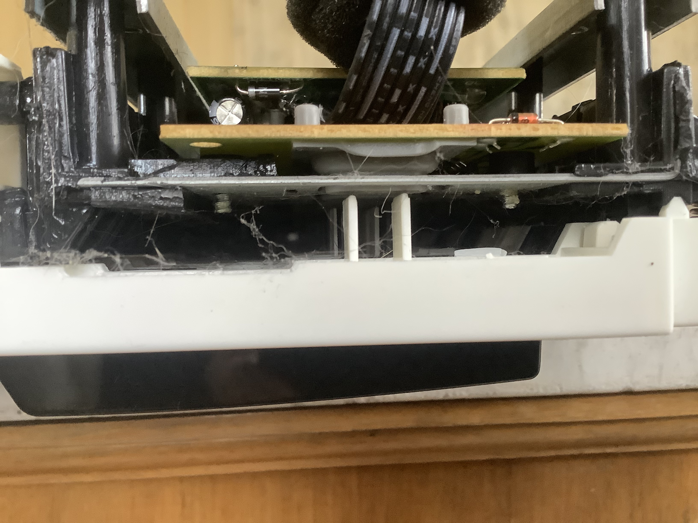
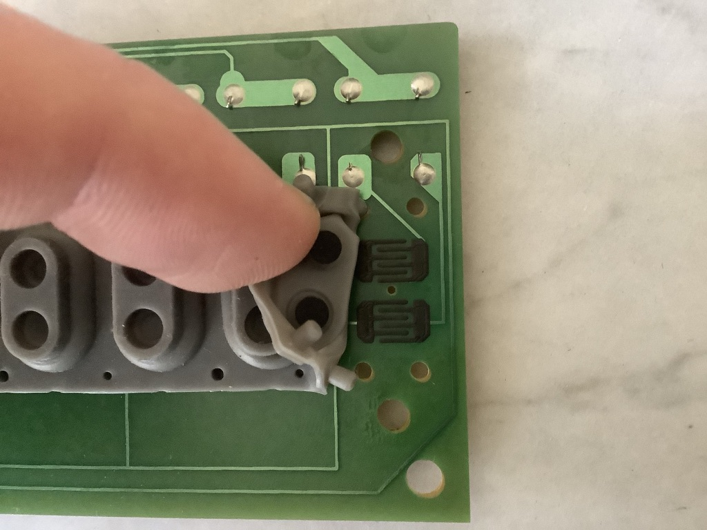
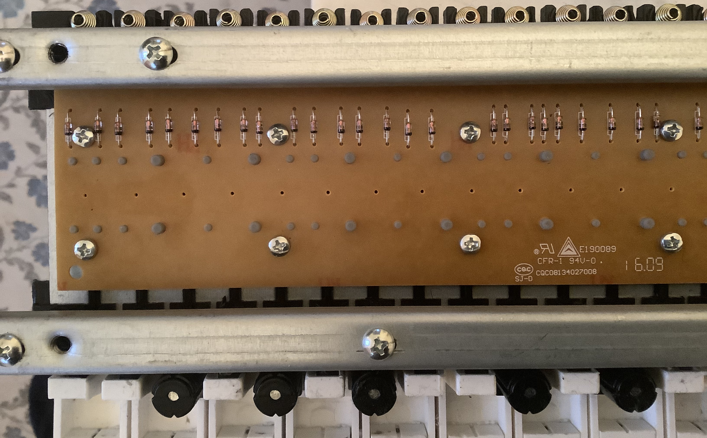
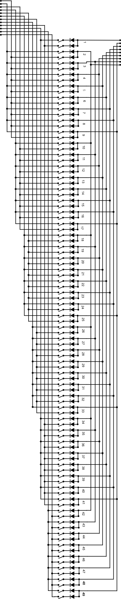
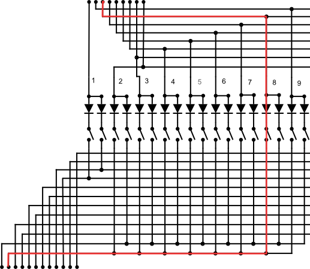
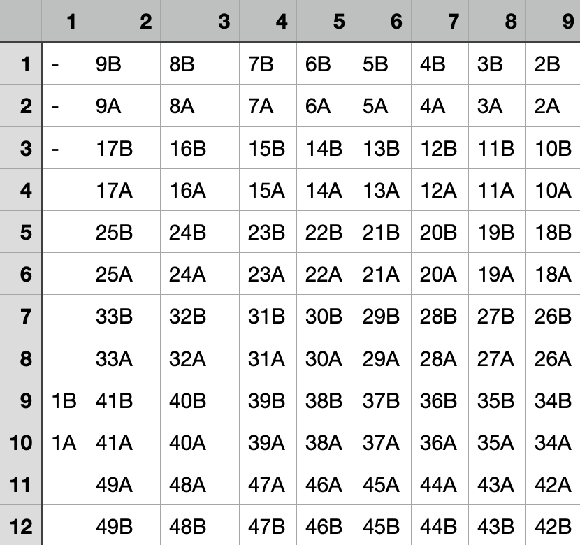
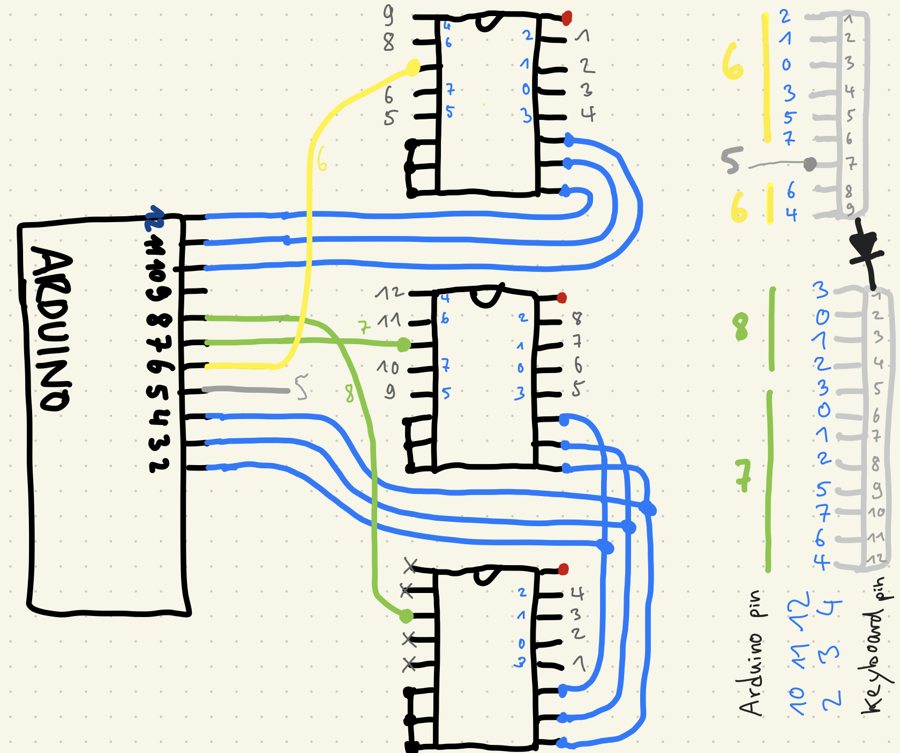

DIY MIDI Keyboard Scanner
February 11, 2021

After the Minimoog MIDI Controller, here comes another electronics project I did a few days ago. As I had a M Audio Keystation 88 MkII laying around that I had replaced with a better master keyboard, I decided to tear it open and look inside..
1. How a MIDI Keyboard looks inside
The first step was dissassembling all the parts and understanding how they work. I cannot speak for all MIDI Keyboards, but I suppose they all work in a similar way.
After removing the case, this is how the keybed looks like:

The little green pcb holds a microcontroller, which controls the keybed:

Looking from the side, we can see plastic fins that push down buttons when keys are pressed:

To get a better view, I removed the pcb from the keybed and took a closer look at the buttons:

Inside each button, there are two circles with conductive ink above a conductive ink pad that is interrupted by a snake shaped gap. If the buttons are pressed, the circles bridge the gap, connecting the left and right inputs. Long story short, these are switches.
Why are there two switches per key?
There are two switches per key to be able to measure the velocity of the keystroke. As one circle is slightly more elevated, it will make a connection a little earlier, before the less elevated one. The time between the connections can be used to tell the velocity (smaller time = higher velocity).
2. Analyzing the PCB
To find out what is going on, I needed to look at the pcb. For all 88 keys, there are 2 pcbs, where one has 49 and the other 39 keys. From this point, I decided to work with only 49 keys, as it is more handy.
Taking a closer look, we can see many diodes on the plastic side:

I took pictures of the other (more interesting) side of the pcb, stitched them together and then redrew the copper lines above the photo:
From the right image, I then created a more overseeable schematic, which is not constrained by pcb dimensions:

The schematic unveils a logical arrangement of connections that is known as a Keyboard Matrix.
Keyboard Matrix
The above arrangement of wiring makes it possible to have much less pins than keys. Here, we have only 21 pins for 96 switches (2 switches for each of the 49 keys). If we did not use a keyboard matrix, we could just connect each switch directly the microcontroller, but that would cost us 96 pins..
The 21 pins are connected via 2 plugs with 9 and 12 pins. As we can tell from the direction of the diodes, the current must flow from the 9 pin connector the the 12 pin connector, as a diode only allows current flowing in one direction (direction of arrow).
Now, the idea of the keyboard matrix is this: If we activate only one input pin, the output pins that will be active let us decipher exactly which keys are pressed. As we have 9 input pins and 12 output pins, we have a total of 9*12 = 108 possible combinations, which is more than enough for our 96 switches.
Example: If we activate input pin 3, output pin 2 will be active if switch 8A is pressed (A = first, B = second switch). We can verify that by looking at the schematic:

To get a better overview, we can create a table to show which combination of pins corresponds to which key switch:

Of course, the values of this table will depend on the keyboard model, but the structure should be the same.
Verifying the Matrix Table
To verify that I am on the track, I used a multimeter in diode testing mode and connected the plus side to an input pin and the minus side to an output pin. Pressing the key that corresponds to the pin combination should then make a connection, while others do nothing. I was quite happy to find out everything behaved as expected.
What a Keyboard Scanner does
Now that we know how the keyboard matrix works, we can start to think of how to handle it. In the end, we want a midi signal each time a key is pressed (note on) and depressed (note off). This task is handled by the keyboard scanner, which is a microcontroller that repeatedly tests all pin combinations very quickly. If a test for a particular combination is positive, a midi signal is sent for the key corresponding to that combination.
3. Arduino Keyboard Scanner
As the already existing microcontroller is a black box, let's wire up our own keyboard scanner with an Arduino Micro. The Arduino Micro is perfect for that task, as it acts as a class compliant USB device.
The only problem: The Arduino Micro only has 20 input pins, but we need 21 for our 49 keys. To fix that, we can use multiplexers, like already used for the midimoog.
Schematic
This time, I started soldering without a plan (not recommended), but drew the "schematic" afterwards:

I did not explicitly draw all connections, this is the meaning of the colors:
- red is 5V
- black is ground
- gray numbers are keybed pins (top ic goes to input pins, bottom ics go to output pins)
- blue are the select pins / cables
- yellow is the input
- green are the outputs
Soldering
After soldering it all together, the connected board board looked like this:

Code
The basic idea of how to check if a key is pressed goes like this:
// send voltage to input pin
digitalWrite(inputPin, HIGH);
if(digitalRead(outputPin) == HIGH) {
// key is pressed => send midi or whatever
}
The Problem: If a key is NOT pressed, the output pin might still be HIGH if it is not connected to ground with a pulldown resistor, as it is "hanging in mid air". When I realized that, I already soldered everything together..
Luckily, Arduino comes with internal pullup resistors. This makes soldering resistors to each input obsolete. But, unluckily, there are no internal pulldown resistors, which means we have to flip the logic:
void setup() {
pinMode(outputPin, OUTPUT);
pinMode(inputPin, INPUT);
digitalWrite(inputPin, HIGH); // pullup
}
void loop() {
// send output pin LOW
digitalWrite(outputPin, LOW);
if(digitalRead(inputPin) == LOW) {
// key is pressed => send midi or whatever
}
}
It took me a while to find this trick, but it makes sense: Instead of setting an output HIGH, we set the input LOW, which results in the current keep flowing through the diodes in the right direction.
Now, here is the code with all the correct ins and outs, according to the schematic:
void setup() {
Serial.begin(9600);
//select pins
// ABC of INPUT
pinMode(10, OUTPUT);
pinMode(11, OUTPUT);
pinMode(12, OUTPUT);
// ABC of OUTPUTs
pinMode(2, OUTPUT);
pinMode(3, OUTPUT);
pinMode(4, OUTPUT);
pinMode(5, INPUT); // gray
digitalWrite(5, HIGH); // pullup
pinMode(6, INPUT); // yellow
digitalWrite(6, HIGH); // pullup
pinMode(7, OUTPUT); // green
pinMode(8, OUTPUT); // green
}
void set4051(int pinA, int pinB, int pinC, int channel) {
// A = least significant bit
// bitRead also starts from least significant bit
digitalWrite(pinA, bitRead(channel, 0));
digitalWrite(pinB, bitRead(channel, 1));
digitalWrite(pinC, bitRead(channel, 2));
}
void loop() {
// loop through all switches (98 = 49 * 2)
for (int k = 0; k < 98; k++) {
int i = k / 12; // values between 0 to 8 (input pins)
int o = k % 12; // values between 0 and 11 (output pins)
// use input pin 5 for i == 8
int readPin = bitRead(i, 3) == 0 ? 6 : 5;
set4051(10, 11, 12, i); // select input channel
set4051(2, 3, 4, o); // select output channel
// use output 7 for o < 8 and output 8 for o >= 8
digitalWrite(7, bitRead(o, 3));
digitalWrite(8, !bitRead(o, 3));
if(digitalRead(readPin) == LOW) {
// connected
Serial.println(k);
}
}
}
With this code, the serial monitor will print number k everytime a key is pressed. This prevents us from the total brainfuck of thinking through which combination of inputs and outputs lead to which key.
All we have to do is press each key lightly first (switch A), then to the bottom (switch B) and write the logged numbers to a list. For my wiring, the list looks like this:
int keys[98] = {
31, 29,
56, 59,
80, 83,
104, 107,
92, 95,
68, 71,
44, 47,
8, 11,
20, 23,
58, 57,
82, 81,
106, 105,
94, 93,
70, 69,
46, 45,
10, 9,
22, 21,
48, 51,
72, 75,
96, 99,
84, 87,
60, 63,
36, 39,
0, 3,
12, 15,
50, 49,
74, 73,
98, 97,
86, 85,
62, 61,
38, 37,
2, 1,
14, 13,
55, 53,
79, 77,
103, 101,
91, 89,
67, 65,
43, 41,
7, 5,
19, 17,
54, 52,
78, 76,
102, 100,
90, 88,
66, 64,
42, 40,
6, 4,
18, 16
};
With this knowledge, we can now loop through the keys in the correct order:
void loop() {
for (int n = 0; n < 98; n++) {
int k = keys[n];
// the rest is the same as above
}
}
For the rest of the logic, we need to keep track of which keys are currently pressed + when the first switch of a key is pressed:
/* */
int maxPressTime = 250; // if key is pressed slower, nothing happens
int minVelocity = 10; // velocity of maxPressTime
int maxVelocity = 90; // velocity of pressTime 0
int midiChannel = 0; // channel 0 = midi channel #1 (zero index)
bool pressed[49] = {}; // keys that are currently pressed
unsigned long pressStart[49] = {}; // remembers keypress starting times
void loop() {
/* */
bool isConnected = digitalRead(readPin) == LOW; // connection is found for
bool isDown = n % 2 == 1; // odd number = switch B => key is pressed down
int keyIndex = n / 2; // 0 - 48 (will round down as it is int)
int midi = keyIndex + 36; // to start from C2
bool isPressed = pressed[keyIndex] == 1; // is already pressed
/* */
}
With that info, we can implement everything else:
void loop() {
/* */
// keypress starts
if (isConnected && !isPressed && !isDown && !pressStart[keyIndex]) {
pressStart[keyIndex] = millis();
}
// key is now fully pressed
if (isConnected && !isPressed && isDown) {
unsigned long pressTime = millis() - pressStart[keyIndex];
float f = (1 - (float)pressTime / (float)maxPressTime);
int velocity = f * (maxVelocity - minVelocity) + minVelocity;
if (debug) {
Serial.print("done pressing ");
Serial.println(f);
}
pressed[keyIndex] = 1;
if (pressTime <= maxPressTime) { // min velocity?
noteOn(midiChannel, midi, velocity);
MidiUSB.flush();
if (debug) {
Serial.print("on ");
Serial.print(midi);
Serial.println(" ");
}
}
}
// key is now fully unpressed
if (!isConnected && isPressed && !isDown) {
pressed[keyIndex] = 0;
noteOff(midiChannel, midi, 0);
MidiUSB.flush();
if (debug) {
Serial.print("off ");
Serial.print(midi);
Serial.print(" ");
Serial.println(" ");
}
}
// key is unpressed => may include keypresses that have started but did not go down
if (!isConnected && !isDown) {
pressStart[keyIndex] = 0; // reset time when key is released completely
}
}
That's it! You can find the complete code here.
4. Final Thoughts
- Now that the keyboard works, I will redo this with the other 39 keys to make 2 keyboards out of one!
- In the end, it was not really necessary to reverse engineer the pcb, but it helped for a deeper understanding.
- In a future project, I want to use the keyboard to send pitch control voltages to an analog synthesizer instead of midi messages.
- I also want to add pitch wheel and mod wheel support + octave change buttons.